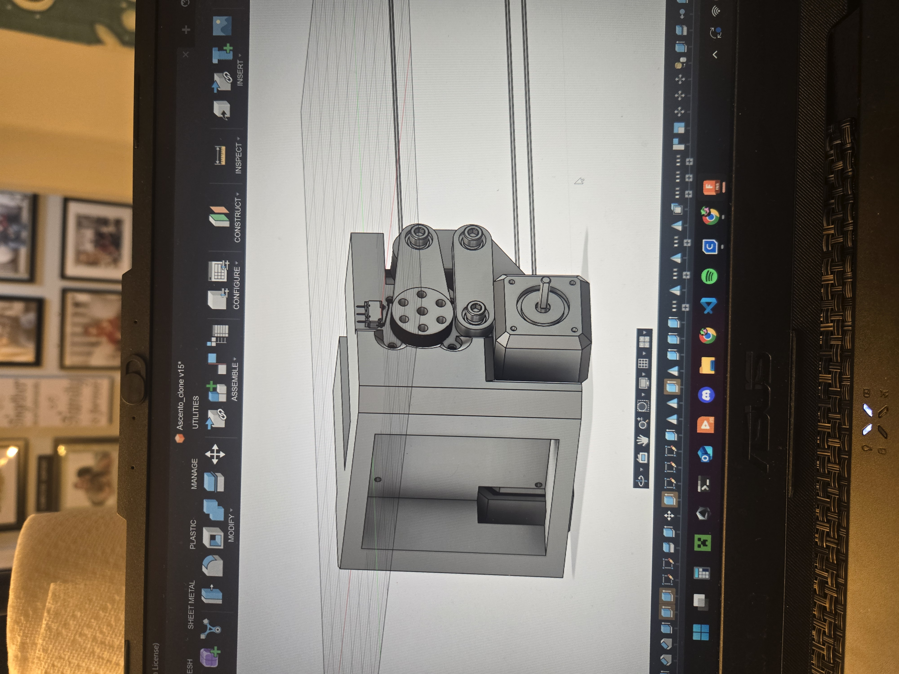

Next problem: Find the short to the Rx and Tx pins stopping me from Compiling and uploading code to the ESP32. From there I can work on the balance control. After balance
control is figured out I will come back to the insufficient torque on the lifting steppers. WOO!